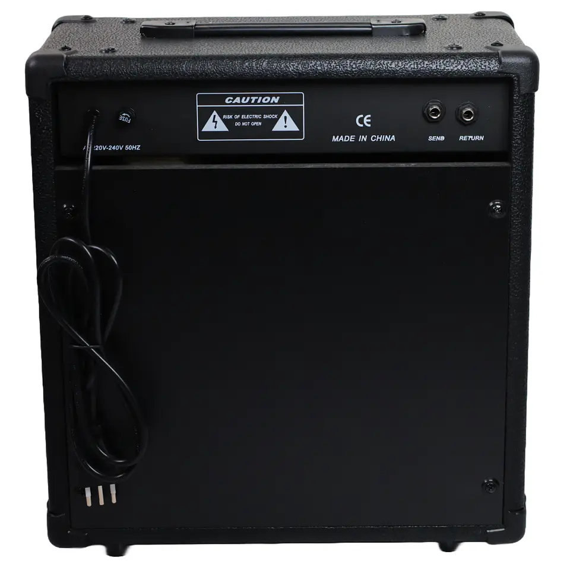

Caso curioso #1: por qué las cuerdas nuevas suenan distinto
Muchos músicos notan que una guitarra recién encordada suena más brillante. Te explicamos qué ocurre con el metal y cada cuánto conviene cambiarlas.
Ver caso
Muchos músicos notan que una guitarra recién encordada suena más brillante. Te explicamos qué ocurre con el metal y cada cuánto conviene cambiarlas.
Ver caso
¿30 watts alcanzan para tocar en vivo? Revisamos la diferencia entre amplificadores de práctica y de escenario, y qué mirar antes de comprar.
Ver caso